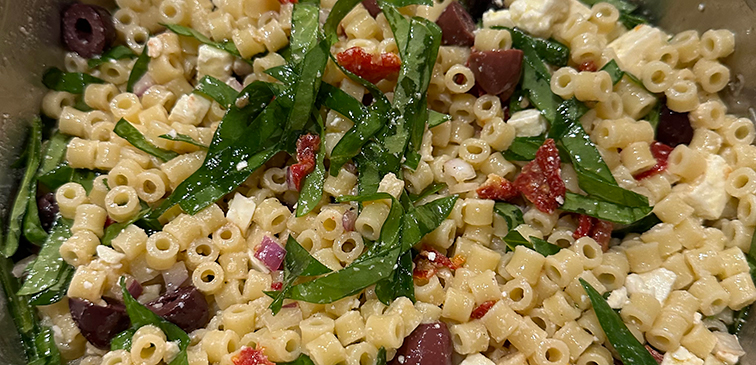

Fusilli Salad
Serving Size: 8-10 People

The batch pictured uses ditalini pasta instead of fusilli. Any short pasta shape will work.
Ingredients
- 3/4 pound feta cheese
- 1 pound spinach fusilli, cooked al dente and drained
- 1/4 cup chopped red onion
- 1/2 cup drained and chopped sundried tomatoes
- 1 cup Kalamata olives, pitted
- 3 cups thinly sliced spinach
Dressing:
- 1/2 cup virgin olive oil
- 3 tablespoons red wine vinegar
- 1 clove garlic, crushed
- 1/2 teaspoon salt
- freshly ground black pepper to taste
Directions
- Crumble feta cheese over pasta.
- Add red onion, sundried tomatoes, olives and spinach; toss
- Combine dressing ingredients and mix well
- Pour dressing over pasta, toss well and serve.